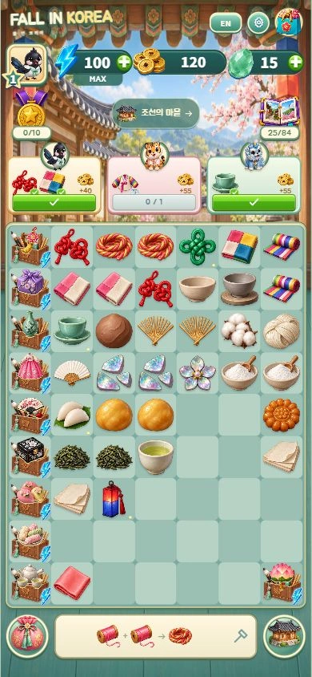

AI-assisted game experiment
Fall in
Korea.
폴 인 코리아
작은 아이템을 합쳐,
나만의 한국 여행을 완성하는 게임.
같은 아이템을 합성하고 손님의 주문을 완성해요. 한옥 마을에서 오늘의 한국까지, 한 걸음씩.
로그인 없이 · 이 브라우저에 자동 저장

A LITTLE TRIP TO KOREA여행을
여행을
시작해 볼까요?
이 버튼을 누르면 게임을 불러옵니다.
플레이 준비 완료
- 아이템 계열
- 14
- 합성 아이템
- 84
- 마을 친구
- 15
- 여행 시대
- 4
아이디어에서, 플레이까지.
AI로 코드와 그래픽 초안을 만들고, 플레이 피드백으로 다듬었습니다. 합성·보상·저장·이관은 자동 회귀 테스트로 확인합니다.
iPhone 형태의 웹 체험
iOS 실기기와 Xcode 컴파일 검증은 아직 진행하지 않았습니다.